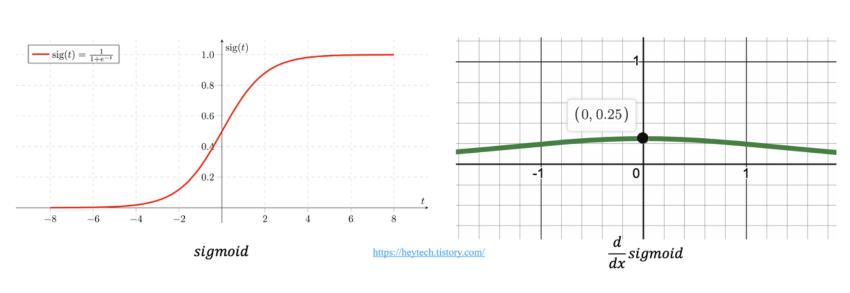
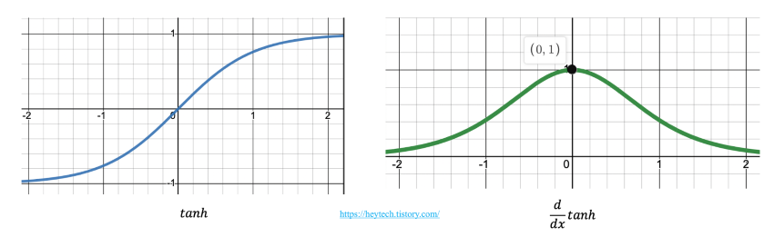
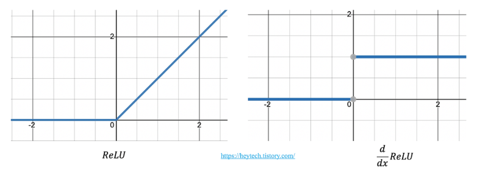
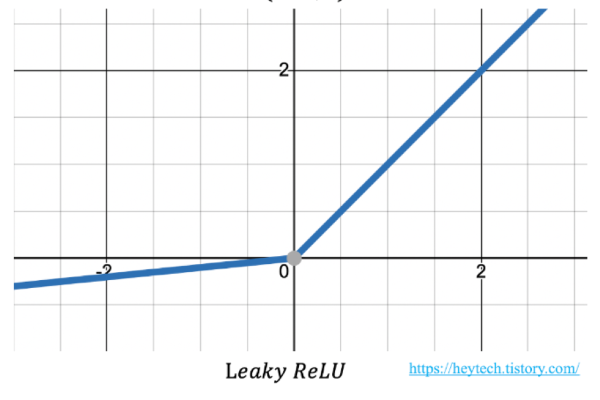

ANN(2) - Vanishing Gradient & Optimization
Vanishing Gradient
Sigmoid
\[ Sigmoid(x) = \displaystyle\frac{1}{1+e^{-x}} \Rightarrow \displaystyle\frac{d}{dx}Sigmoid(x) = \frac{e^{-x}}{(1+e^{-x})^2}\]

- Gradient Descent를 하다보면 Activation Function도 미분을 해야되는데 Sigmoid의 최대값은 \(\displaystyle\frac14\), 그외의 값은 거의 0에 수렴한다.
- Chain Rule을 적용해야하는 입장에서 보면, Sigmoid는 엄청난 기울기 손실, Vanishing Gradient 문제를 가져온다. Chain Rule : \(\displaystyle\frac{\partial L}{\partial x} = \displaystyle\frac{\partial L}{\partial a} \displaystyle\frac{\partial a}{\partial z}\displaystyle\frac{\partial z}{\partial x} \;\;\;\;\text{if)}\displaystyle\frac{\partial a}{\partial z}\approx 0\)
tanh
\[tanh(x) = \displaystyle\frac{e^{x} - e^{-x}}{e^{x}+e^{-x}} \Rightarrow \displaystyle\frac{d}{dx} tanh(x) = \displaystyle\frac{4}{(e^x+e^{-x})^2}\]

- 또 하나의 Activation Function인 tanh도 마찬가지로 최대값은 1이고 그 외의 값은 0에 수렴한다.
- Sigmoid와 같이 Vanishing Gradient 문제가 발생한다.
ReLU

- ReLU의 경우에는 \(x \geq 0\)인 상황에서 기울기는 항상 1이므로 Vanishing Gradient 문제에 대한 돌파구가 될 수 있다.
Leaky ReLU

- Leaky ReLU는 \(x \leq 0\)인 상황에서의 Vanishing Gradient 문제를 해결하고자 만들어진 대안책이다.
Optimization
Gradient descent
\(W = W - \alpha\displaystyle\frac{\partial}{\partial W} L(W,b)\)
\(b = b - \alpha\displaystyle\frac{\partial}{\partial b} L(W,b)\)
\(\alpha\) : learning rate & hypyer parameter
SGD(Stochastic Gradient Descent)
\(W = W - \alpha\displaystyle\frac{\partial}{\partial W} L(W,b\,;\,x^{(i)}, y^{(i)})\)
\(b = b - \alpha\displaystyle\frac{\partial}{\partial b} L(W,b)\,;\,x^{(i)}, y^{(i)})\)
Momentum

- 물리에서 사용되는 운동량의 개념에서 시작됨.
- 공이 내리막길을 다 내려가도 앞으로 나아가려는 성질을 이용함.
- 즉, local minima 문제를 해결할 수 있는 아이디어
\(Vdw := \beta_1\cdot V dw + (1-\beta_1) \cdot dw \left(dw = \displaystyle\frac{d}{dw} L(w,b) \right)\)
\(Vdb := \beta_1\cdot V db + (1-\beta_1) \cdot db \left(db = \displaystyle\frac{d}{db} L(w,b) \right)\)
\(\beta_1\)는 RMSprop에서 사용되는 \(\beta_2\) 와 구분되기 위한 첨자임.
\(W := W - \alpha \cdot Vdw\)
\(b := b - \alpha \cdot Vdb\)
- \(\beta\) 역시 \(\alpha\)(learning rate)처럼 하이퍼 파라미터이다. \(\rightarrow\) 사람이 직접 정해줘야 하는 파라미터
- 경험적으로 \(\beta\)는 0.9로 많이 쓰인다. 식으로 살펴보자
$Vdw := 0.9V dw + 0.1 dw \(\ \)$ 이는 \(dw\)를 10으로 나눈 것으로 과거 기울기 10개의 평균치를 보겠다는 것과 같은 의미이다. - 과거 기울기가 클수록 \(Vdw\)는 커지게 되고 이는 다음 \(W\)를 update하는데 영향을 준다. \(\rightarrow\) 기울기가 클수록 공이 다음 언덕으로 올라갈 확률이 높아진다.
RMSprop (Root Mean Square probability)
\(Sdw = \beta_2\cdot V dw + (1-\beta_2) \cdot (dw)^2 \left(dw = \displaystyle\frac{d}{dw} L(w,b) \right)\)
\(Sdb = \beta_2\cdot V db + (1-\beta_2) \cdot (db)^2 \left(db = \displaystyle\frac{d}{db} L(w,b) \right)\)
\(\beta_2\)는 Momentum에서 사용되는 \(\beta_1\) 와 구분되기 위한 첨자임.
\(W := W - \alpha \cdot \displaystyle\frac{dw}{\sqrt{Sdw}} + \epsilon\)
\(b := b - \alpha \cdot \displaystyle\frac{dw}{\sqrt{Sdb}} + \epsilon\)
- Momentum과 비슷한 수식을 가지고 있지만, RMSprob에서는 \(dw\)가 제곱의 형태임. \((dw) \rightarrow (dw)^2\)
- \(\beta_2\)역시 경험적으로 0.9가 많이 사용되는데, 이는 최근 10개의 기울기에 대해 가중치를 두어서 parameter를 업데이트 하겠다는 의미이다.
Adam(Adaptive Momentum Estimation) : RMSprop + Momentum
\(m_0 = 0 \, , \, v_0 = 0\)
\(m_{t+1} := \beta_1 \cdot m_t + (1-\beta_1) \cdot \displaystyle\frac{\partial L}{\partial \theta}\)
$v_{t+1} := _2 v_m + (1-_2) ()^2 $
\(\theta := \theta - \displaystyle\frac{\epsilon}{\sqrt{v_t} + e^{-5}}\)